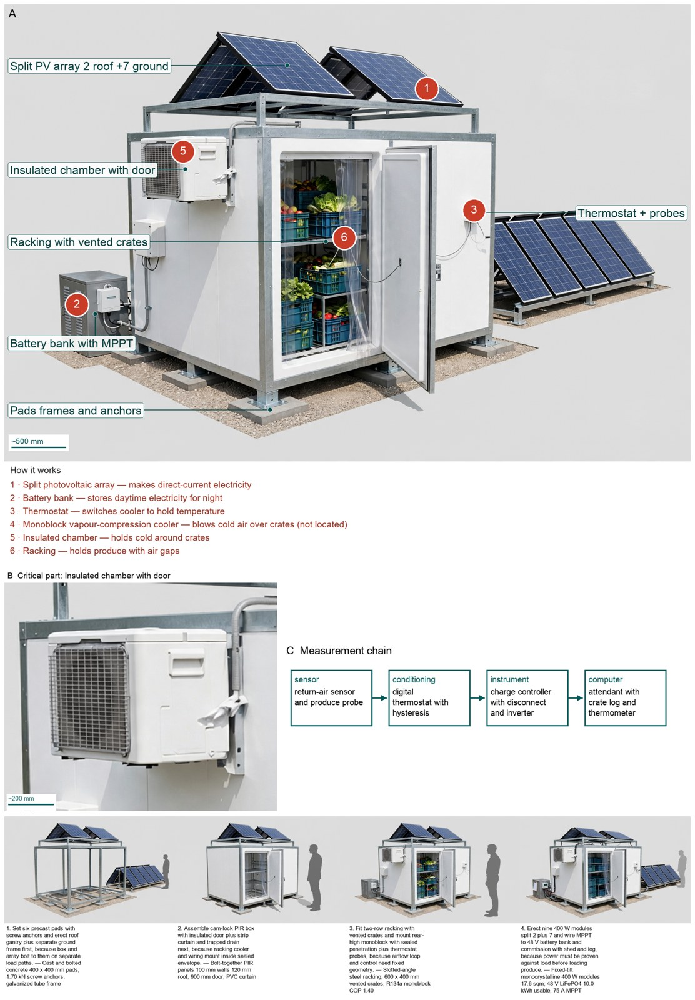
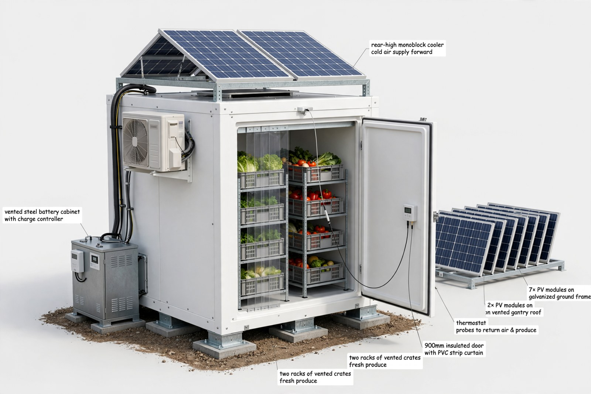
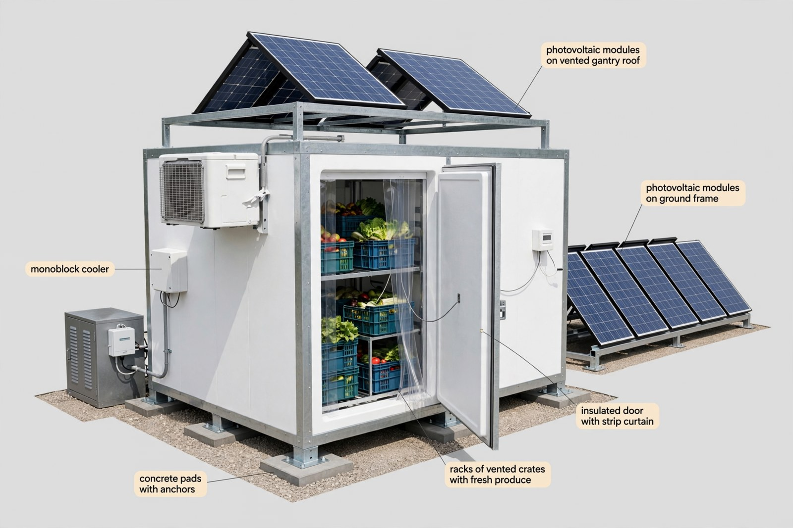
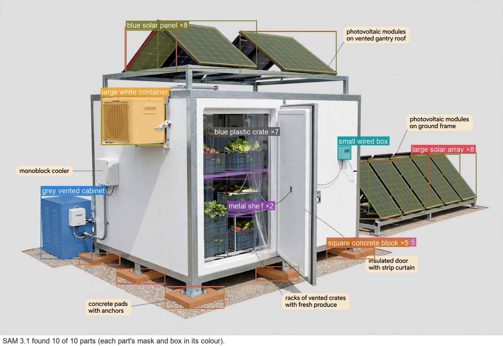

Hardware Engineer — concept report
Off-grid solar-powered cold storage for smallholder farmers
Smallholder farmers in hot regions without grid electricity lose a large share of their fruit and vegetables after harvest because they cannot keep them cool. Design an energy-efficient, solar-powered cold storage unit that a farming cooperative can use to keep fresh produce cool until it is sold.
- No grid electricity; solar energy only
- Store about 1 tonne of fresh produce
The concept

Sunlight makes electricity that is stored and then runs a fridge that blows cold air over stacked crates to keep 1000 kg of produce near 5 C.
Energy: split solar array -> battery bank -> monoblock cooler | Measured: temperature probes -> thermostat control
Three decisive design choices
- Grown 3.6 kWp split 2 on roof plus 7 on ground chosen because 2.4 kWp yields only 9.00 kWh per day short of load and 17.6 sqm cannot fit 4.32 sqm roof.
- 48 V lithium iron phosphate bank chosen because ice-only and eutectic-only output cold not dispatchable electricity to run fans controls and compressor start while thermal stays only as buffer.
- DC variable-speed R134a monoblock chosen because only vapour-compression lifts 38 K at 43 C ambient with village service, beating thermal-only and pad-only means.
Does 250 kg daytime pull-down reach uniform 5 C at 43 C ambient in built hardware with 8 openings?
What happened
How the picture was made


What the critic flagged:
- callout: text 'rear-high monoblock cooler cold air supply forward' leader ends on roof PV modules, not cooler
- callout: text '7x PV modules on galvanized ground frame' contains number '7x'
- callout: text '2x PV modules on on vented gantry roof' contains number '2x', duplicated 'on', truncated, leader near door/ground not roof
- callout: text '900mm insulated door with PVC strip curtain' contains number '900mm'
- callout: two identical labels 'two racks of vented crates fresh produce' contain number word 'two', duplicated, one leader ends on concrete foundation pad not crates


Earlier faults now:
- callout: fixed
What the segmenter saw (SAM 3.1)
Code asked SAM for each part by a plain phrase and measured the boxes against what the design expects; the critic received the differences as evidence.

How the council changed
Revision 1
- Solar Energy Systems Engineer's instructions changed:
+- Must reuse the refrigeration thermal total by id and state the thermal-to-electrical conversion basis at hot conditions when sizing source and storage, because thermal watts cannot be compared directly to electrical yield. +- Must carry every electrical load term explicitly in a term-by-term sum that others can reuse, because any omitted heat-gain or fan term makes yield minus load look larger than it is. +- Must show array yield with derates for heat, soiling and cloud and size usable storage with autonomy days, surge capability and shed behaviour, because night load must be carried by stored energy alone on the worst sun days. +- Must cross-read the refrigeration and operations estimates before computing and check results against everyday scales, because handover arithmetic only closes when inputs agree.
- Cold-Chain Refrigeration Engineer's instructions changed:
+- Must declare the thermal-to-electrical conversion basis for the chosen cooling principle at hot conditions, because others cannot size electricity from thermal heat alone. +- Must select a single door-infiltration model tied to openings, curtains and latent load and carry it into the daily total, because two models for the same door leave holding undecidable. +- Must publish a single term-by-term thermal total naming every term that others reuse by id and explicitly supersede any earlier value it replaces, because two totals for the same duty leave release undecidable. +- Must read enclosure and operations evidence before computing and name any behaviour needing built hardware as a bench test without treating it as proven, because field pull-down and infiltration cannot be settled by arithmetic alone.
- Enclosure and Structural Designer's instructions changed:
+- Must list every mass term from a complete parts list including structure, energy, cooling and foundation terms when proving soil pressure, because a partial weight understates bearing demand. +- Must confirm which envelope dimensions control conduction and reuse that same envelope consistently, because inconsistent areas double-count or undercount heat gain. +- Must detail each support and mounting structure separately with its own load paths, anchor capacity with pull-out basis, and penetration and drain sealing, because uplift and air leaks break standing and holding even when footprint arithmetic fits. +- Must jointly confirm soft-to-rigid transition compatibility with adjacent owners before agreement, because layer sequence must be buildable as well as depictable.
- Smallholder Cooperative Operations Specialist's instructions changed:
+- Must declare any representative counts as enforceable operating limits with attendant log and fee-funded maintenance, because illustrative counts cannot protect energy and temperature when violated without consequence. +- Must tie crate rate, single-crate door discipline and opening counts directly to the door-loss value used in the energy total, because extra openings break holding without breaking any stated rule unless the tie is explicit. +- Must own load-shed and full-intake refusal behaviour for cloud and overload attempts and confirm setpoint and discipline by evidence, because foreseeable worst-case use must be refused by rule rather than absorbed by margin.
References
115 sources found by the council's searches and the prior-art check (click to open)
- richsolar.com — 4000 Watt Solar | 48V 6500W/120V Hybrid Inverter | All-in-One Kit https://richsolar.com/products/4000-watt-solar-48v-6500w-120v-all-in-one-kit
- globalsouthhealth.com — Solar Cold Room: A Solution Gaining Momentum https://www.globalsouthhealth.com/blog/solar-cold-room-a-solution-gaining-momentum/
- ecozensolutions.com — Ecofrost - Solar Powered Cold Storage Room Manufacturer in India - Ecozen | Ecozensolutions https://www.ecozensolutions.com/innovation/micro-cold-storage
- katom.com — R134a vs. R290 Refrigerant: Key Differences & Replacements https://www.katom.com/learning-center/r134a-vs-r290-refrigerant.html
- engineeringforchange.org — Cold Hubs | Engineering For Change https://www.engineeringforchange.org/solutions/product/cold-hubs
- wigmors.pl — Secop is committed to delivering advanced refrigeration compressors and (2021) https://www.wigmors.pl/wp-content/uploads/2021/10/Sprezarki-chlodnicze-hermetyczne-Secop-AC-katalog-skrocony-EN-2021-08_compressed.pdf
- agrinnovators.org — ColdHubs | Agrinnovators https://agrinnovators.org/business-profile/coldhubs/
- images.tradeservice.com — Hermetic Compressors for DC Voltage Modern comfort is brought into life when leaving home. As people go mobile, so does food. The excellent performance of the BD series safeguards food preservation. https://images.tradeservice.com/ATTACHMENTS/DIR100306/Danfoss_00490_3_4_7_18_20_22_24_28_45_50-53_94_95_CAT.pdf
- assets-eu.researchsquare.com — Assessing the Thermal Load of Low-Cost Cold Storage for Perishable Agricultural Products Used in Rural Areas of Bangladesh https://assets-eu.researchsquare.com/files/rs-5039022/v1_covered_5f1135f1-005c-4023-9628-5b3a8d41d02e.pdf?c=1725609907
- yumpu.com — Heat Load Calculation https://www.yumpu.com/en/document/view/36214174/heat-load-calculation
- sciencedirect.com — A solar powered off-grid air conditioning system with natural refrigerant for residential buildings: A theoretical and experimental evaluation https://www.sciencedirect.com/science/article/pii/S2772783123000274
- offgridcollective.co — How to Size an Off-Grid Solar System (5-Step Guide) | Off Grid Collective USA https://offgridcollective.co/us/guides/power-systems/how-to-size-off-grid-solar-system/
- xcairfilter.en.made-in-china.com — Professional Manufacturer Factory Keep Warm Insulated PU Sandwich Panel https://xcairfilter.en.made-in-china.com/product/mdofcOsxXArq/China-Professional-Manufacturer-Factory-Keep-Warm-Insulated-PU-Sandwich-Panel.html
- laotie-steel.com — Sandwich Panel Types: PU, PIR, EPS & Rock Wool Compared https://www.laotie-steel.com/blog/sandwich-panel-types-pu-pir-eps-rock-wool-comparison
- pushpanjaliprefabbuilding.com — Cold Storage Room https://www.pushpanjaliprefabbuilding.com/cold-storage-room.html
- ecer.com — Hydroponics Vegetable And Flower Cold Storage Room Walk In Freezer Customization https://www.ecer.com/corp/details-uuuesgy-p1ejtqj-%E6%B0%B4%E6%A0%BD%E5%9F%B9-%E9%87%8E%E8%8F%9C%E3%81%A8%E8%8A%B1-%E5%86%B7%E8%94%B5%E5%BA%AB-%E3%82%A6%E3%82%A9%E3%83%BC%E3%82%AF%E3%82%A4%E3%83%B3-%E3%83%95%E3%83%AA%E3%83%BC%E3%82%B6%E3%83%BC-%E3%83%91%E3%83%BC%E3%82%BD%E3%83%8A%E3%83%A9%E3%82%A4%E3%82%BC%E3%83%BC%E3%82%B7%E3%83%A7%E3%83%B3.html
- plastic2go.com.au — Best Folding Vented 600x400 Plastic Crates for Sale https://www.plastic2go.com.au/product-category/plastic-crates/600x400/folding-vented-iso-crate/folded-height/27-7-mm/
- plastic2go.com.au — Best Folding Vented 600x400 Plastic Crates for Sale https://www.plastic2go.com.au/product-category/plastic-crates/600x400/folding-vented-iso-crate/weight/1-87-kg/
- our-power.co.uk — Solar powered ice maker: off-grid cold chain explained https://our-power.co.uk/solar-powered-ice-makers/
- coldhubs.com — The Solution – ColdHubs https://coldhubs.com/our-solution/
- fao.org — Small-Scale Postharvest Handling Practices http://www.fao.org/4/ae075e/ae075e13.htm
- praxis42.com — Manual handling weight limits https://praxis42.com/resources/health-and-safety/manual-handling-weight-limits/
- sidley.com — ColdHubs Ltd | Sidley Emerging Enterprises Pro Bono Program | Pro Bono | Sidley Austin LLP https://www.sidley.com/en/probonolanding/sidley-emerging-enterprises-pro-bono-program/projects/coldhubs-ltd
- fao.org — Small-Scale Postharvest Handling Practices https://www.fao.org/4/ae075e/ae075e16.htm
- nss.nhs.scot — Once for Scotland - Manual handling (2026) https://www.nss.nhs.scot/media/7013/foi-2026-3422-once-for-scotland-manual-handling.pdf
- gennergyps.co.za — Solar powered cold storage units Vanuatu (2024) https://gennergyps.co.za/content/files/Solar-powered-cold-storage-units-Vanuatu_Thu-04-Jul-2024-34789.pdf
- agriculture.institute — Designing Efficient Cold Storage: Key Factors and Cooling Loads https://agriculture.institute/diary-equipment-utilities/efficient-cold-storage-design-factors-cooling-loads/
- artisanindustrial.com.au — Reliable Refrigerated Transport | Cold Car & Delvic Foods https://artisanindustrial.com.au/refrigerated-transport-that-keeps-it-cool-cold-car-delvic-foods/
- rjwave.org — Effect of Condenser Cooling Methods on COP of a Vapour Compression Refrigeration System https://rjwave.org/ijedr/papers/IJEDR2603107.pdf
- atlantis-press.com — The Effects of Number of Passengers and Duration of Door Opening and Closing Toward Temperature Change (Case Study: KRL Series JR 205 Crossing Manggarai - Depok) https://www.atlantis-press.com/article/125985597.pdf
- rgees.com — product https://rgees.com/product/
- researchgate.net — Schematic diagram of the evaporative cooling combined with a condenser https://www.researchgate.net/figure/Schematic-diagram-of-the-evaporative-cooling-combined-with-a-condenser_fig2_354256292
- portal.segensolar.co.za — Huisie by die see (2018) https://portal.segensolar.co.za/reseller/images/Presentations/2018/MLT%20-%20PRESENTATIONS/System%20Sizing%20Off%20Grid%20System%20v2.pdf
- mart.ecer.com — Insulated PUR PIR Sandwich Panel 100mm Cold Room Panels Roof Cladding from China Factory https://mart.ecer.com/baodupanel/pz62ec347-insulated-pur-pir-sandwich-panel-100mm-cold-room-panels-roof-cladding.html
- m.madeinchina.com — Fire Proof Interior / Exterior PU/ Rock Wool Insulation Wall / Ceiling Sandwich Panel for Cold Room https://m.madeinchina.com/mall/show-Fire-Proof-Interior-Exterior-PU-Rock-Wool-Insulation-Wall-Ceiling-Sandwich-Panel-for-Cold-Room_329441.html
- scribd.com — Structural Design Calculation Sheet | PDF | Strength Of Materials | Precast Concrete https://www.scribd.com/document/359822446/CT-631-Design-Calculation-Sheet-Rev-01-pdf
- brainly.com — [FREE] Question 1 (2 pts)
- The footing is constructed - brainly.com https://brainly.com/question/35316993
- prbsenergy.com — PRBS 400W Monocrystalline Photovoltaic Panels | Commercial & High-Performance https://www.prbsenergy.com/PRBS-LPro-HD-400-420W.html
- s0larpanel.com — SolarPeak Pro 400 https://www.s0larpanel.com/product-detail.html
- heavengreenenergy.com — Insolation in Solar: Meaning and Why It Matters https://www.heavengreenenergy.com/glossary/insolation
- snowmaster.com.au — Coolroom Buying Guide: Walk-In Refrigeration for Kitchens https://snowmaster.com.au/blog/coolroom-buying-guide-australia
- llahub.gca.org — Preserving Harvests: Fresh Solutions to Food Loss in Kenya https://llahub.gca.org/stories/c67c4b60-45de-431c-a977-b96aa8322560
- old.energypedia.info — Cold Storage of Agricultural Products - old.energypedia.info https://old.energypedia.info/wiki/Cold_Storage_of_Agricultural_Products
- zbook.org — Walk-in Cold Rooms And Freezer Rooms - Unicef - PDF Document https://zbook.org/read/c9d3d1_walk-in-cold-rooms-and-freezer-rooms-unicef.html
- stuvia.com — HRBUS83 Assignment 5 {COMPLETE ANSWERS} Semester 2 (Due Date October 2026) (2026) https://www.stuvia.com/en-za/doc/12791484/hrbus83-assignment-5-complete-answers-semester-2-due-date-october-2026
- agriculture.institute — Special Transportation Needs for Agricultural Products - Agriculture Notes by Agriculture.Institute https://agriculture.institute/food-processing-and-engineering-i/special-transportation-needs-agricultural-products/
- solar-electric.com — Solar Water Pumps, DC Pumps, Solar Well Pumps | NAZ Solar Electric https://www.solar-electric.com/solar-water-pumping.html?price=5000-6000
- solaripedia.com — Solaripedia | Resource https://www.solaripedia.com/259/3598/resource.html
- sunpal-energy.com — 48V Lithium Battery Maintenance Guide: How To Extend Your Solar Battery Lifespan And Improve Performance https://www.sunpal-energy.com/48v-lithium-battery-maintenance-guide-how-to-extend-your-solar-battery-lifespan-and-improve-performance
- rocksolar.ca — Dakota 48V 74Ah LiFePO4 Battery | Lithium Battery Canada – ROCKSOLAR CANADA https://rocksolar.ca/products/dakota-48v-74ah-lifepo4-battery?utm_content=Facebook_UA&utm_source=facebook&variant=54438643368227
- allbatteries.co.uk — Spectra 400W 48V Rigid Solar Panel - Monocrystalline PERC https://www.allbatteries.co.uk/spectra-400w-48v-rigid-solar-panel-monocrystalline-perc-spr6038.html
- m.globalsources.com — Bulk Buy China Wholesale 30kw Dc Inverter Evi Monoblock Low Temperature Heating Air Source Heat Pump Water Heater For Fan Coil $818 from Foshan Zhen Ang Electronic Equipment Co., Ltd. | Globalsources.com https://m.globalsources.com/product/high-temperature-heat-pump_1209667085f.htm?source=SEO_TP_to_PP
- madeinchina.com — House Heating Heat Pump with Monoblock Hydro Box a+++ CE - MadeInChina.com https://madeinchina.com/mall/show-House-Heating-Heat-Pump-with-Monoblock-Hydro-Box-a-CE_1217356.html
- darment18-test.sprintit.fi — BD50F Direct Current Compressor R134a, 12-24V DC & 100-240V AC 50/60Hz https://darment18-test.sprintit.fi/web/content/77489?download=true
- skh-kaeltetechnik.de — BD50F Direct Current Compressor R134a, 12/24V DC https://www.skh-kaeltetechnik.de/mediafiles/Sonstiges/BD50F_2.pdf
- muhaz.org — Tahun 2000. Part IV processing by the removal of heat (2000) https://muhaz.org/tahun-2000-part-iv-processing-by-the-removal-of-heat.html
- archive.nptel.ac.in — Microsoft Word - 15.Refrigeration (1).docx https://archive.nptel.ac.in/content/storage2/courses/103107088/module15/lecture1/lecture1.pdf
- files.danfoss.com — MAKING MODERN LIVING POSSIBLE https://files.danfoss.com/download/CorporateCommunication/DanfossCity/Compressors-for-extreme-conditions.pdf
- assets.danfoss.com — Danfoss BD Compressors for extreme conditions https://assets.danfoss.com/documents/latest/99496/AF062286422682en-000101.pdf
- hbgoldfinchmetal.com — Ground Screw Pole Anchor https://www.hbgoldfinchmetal.com/ground-screw/ground-screw-pole-anchor.html
- 123docz.net — Nghiên cứu giải pháp neo xoắn để gia cường ổn định cho cấu kiện bảo vệ mái kênh công trình thủy lợi TT TIENG ANH https://123docz.net/document/9896984-nghien-cuu-giai-phap-neo-xoan-de-gia-cuong-on-dinh-cho-cau-kien-bao-ve-mai-kenh-cong-trinh-thuy-loi-tt-tieng-anh.htm
- baodupanel.com — Insulated PUR PIR Sandwich Panel 100mm Cold Room Panels Roof Cladding https://www.baodupanel.com/doc/37908004/insulated-pur-pir-sandwich-panel-100mm-cold-room-panels-roof-cladding.pdf
- everychina.com — Insulated PUR PIR Sandwich Panel 100mm Cold Room Panels Roof Cladding https://www.everychina.com/p-z52fba2f-114553945-insulated-pur-pir-sandwich-panel-100mm-cold-room-panels-roof-cladding.html
- rparts.com — | BD50F | | https://www.rparts.com/documents/BD50F_inch-compressor.pdf
- ayranlikmakinesi.com — | BD50F | | https://www.ayranlikmakinesi.com/kataloglar/12-voltluk-buzdolabi-sogutma-motoru-ekovat-baglanti-sekli-tel-0212-2974432.pdf
- agriculturaljournals.com — Effectiveness of solar-powered cold storage for fresh produce preservation in remote areas https://www.agriculturaljournals.com/archives/2025.v7.i9.A.1480/effectiveness-of-solar-powered-cold-storage-for-fresh-produce-preservation-in-remote-areas
- unreasonablegroup.com — Ecozen Solutions – an Unreasonable company https://unreasonablegroup.com/ventures/ecozen-solutions
- scinovex.com — Effectiveness of solar-powered cold storage for fresh produce preservation in remote areas https://www.scinovex.com/articles/W7160699909.pdf
- iiec.org — Fresh box - Refrigerated storage (Solar option) (FreshBox) https://www.iiec.org/coolingdemo-technologies/720-cold-storage-and-food-processing/684-fresh-box-refrigerated-storage-freshbox
- xbcoldroom.com — Off-Grid Solar Cold Storage Container with Foldable Solar Panels for Farm Produce https://www.xbcoldroom.com/Off-Grid-Solar-Cold-Storage-Container-with-Foldable-Solar-Panels-for-Farm-Produce-pd196491638.html
- freezepromax.com — Solar Cold Storage from China manufacturer - FreezePro https://freezepromax.com/Solar-Cold-Storage-pd510139948.html
- agtecher.com — Ecofrost Solar Cold Storage: Sustainable... | AgTecher https://agtecher.com/en/hardware/ecofrost-solar-cold-storage/
- farmbizafrica.com — Graduates unveil cheap, locally made solar-powered cold-room for preserving fresh farm produce https://farmbizafrica.com/graduates-unveil-cheap-locally-fabricated-solar-powered-cold-room-for-preserving-fresh-farm-produce/?option=com_content&view=article&id=2565&catid=12
- insulatedsystemsltd.com — Solar Cold Rooms – Insulated Systems https://insulatedsystemsltd.com/solar-cold-rooms/
- borgenproject.org — Food Security with Solar Cold Storage in Africa https://borgenproject.org/solar-cold-storage-in-africa/
- smartbuy.alibaba.com — How to Choose Ecozen Cold Storage: A Complete Buyer's Guide https://smartbuy.alibaba.com/buyingguides/ecozen-cold-storage
- indiamart.com — Ecofrost Solar Cold Room https://www.indiamart.com/proddetail/ecofrost-solar-cold-room-20855381197.html
- ireap.thecleannetwork.org — IREAP- Product Details https://ireap.thecleannetwork.org/products/35
- unstop.com — Ecozen Solutions Private Limited Careers: Jobs, Internships, Competitions & More https://unstop.com/c/ecozen-solutions-private-limited-recruiter-career-interview-selection-process-job-profile-articles-videos-118763/amp
- scribd.com — Ecozen Solutions: Solar Products Overview https://www.scribd.com/document/214645635/Brochure
- iiec.org — Ecofrost - Portable, solar powered cold rooms (Ecozen solutions) https://www.iiec.org/cold-storage-and-food-processing/677-ecofrost-portable-solar-powered-cold-rooms-ecozen-solutions
- internshala.com — Ecozen Solutions Private Limited Company Profile & Overview https://internshala.com/company/ecozen-solutions-private-limited-1524660013/
- electronicsforu.com — Ecofrost: Made In India Solar-Powered Cold Storage To Reduce Crop Spoilage https://www.electronicsforu.com/electronics-startups/ecofrost-made-in-india-solar-powered-cold-storage-to-reduce-crop-spoilage
- ireap.thecleannetwork.org — IREAP- Product Details https://ireap.thecleannetwork.org/products/33
- jobs.omnivore.vc — VP- R&D @ Ecozen | Omnivore Job Board https://jobs.omnivore.vc/companies/ecozen-2/jobs/28901227-vp-r-d
- trademagazin.hu — ColdHubs - Trademagazin https://trademagazin.hu/en/tag/coldhubs/
- techtrends.africa — Cold Chain Technology In Africa: Solving The Food Waste Problem | TechTrends Africa https://techtrends.africa/cold-chain-technology-in-africa-solving-the-food-waste-problem/
- coldhubs.com — Salad Market Aba, ColdHubs https://coldhubs.com/coldhubnews/2025/3/31/salad-market-aba-coldhubs
- solve.mit.edu — MIT Solve | ColdHubs https://solve.mit.edu/challenges/coastal-communities/solutions/5035/application
- sitra.fi — Communal refrigerated buildings powered by the sun https://www.sitra.fi/en/cases/communal-refrigerated-buildings-powered-by-the-sun/
- economistgreen.com — ECONOMISTGREEN.COM bard.solar UNsummitfuture.com https://www.economistgreen.com/2016/05/nnameka-ikegwuonu-coldhubs-nigeria.html
- thecooldown.com — African farmers are paying by the kilo for solar cold rooms to keep harvests from rotting https://www.thecooldown.com/green-business/revolutionary-rental-system-boosting-farmers-incomes/
- techxlab.org — Cold Rooms by ColdHubs https://techxlab.org/solutions/cold-rooms-by-coldhubs/
- abtnews.net — REDUCING THE ROT AND WASTE: How Solar Tech Can Rescue Africa’s Post-Harvest Losses And Unlock Trillion-Dollar Agricultural Boom! https://abtnews.net/reducing-the-rot-and-waste-how-solar-tech-can-rescue-africas-post-harvest-losses-and-unlock-trillion-dollar-agricultural-boom/
- pitchbook.com — ColdHubs 2026 Company Profile: Valuation, Funding & Investors | PitchBook https://pitchbook.com/profiles/company/115381-63
- theindexproject.org — ColdHubs - solar cold rooms - The Index Project https://theindexproject.org/award/nominees/4322
- pv-magazine.com — Solar-powered cold storage service https://www.pv-magazine.com/2021/06/08/solar-powered-cold-storage-service/
- coldchainsa.com — Powering the Cold Chain: Renewable Energy Solutions for South African Cold Storage Operations https://coldchainsa.com/powering-the-cold-chain-renewable-energy-solutions-for-south-african-cold-storage-operations/
- pv-magazine-india.com — Solar-powered cold storage as a service https://www.pv-magazine-india.com/2021/06/07/solar-powered-cold-storage-as-a-service/
- pmarketresearch.com — Solar Powered Cold Room Market https://pmarketresearch.com/auto/solar-powered-cold-room-market/
- youtube.com — They Built a Farm Cold Room That Runs Without Electricity or Batteries? 🤯 https://www.youtube.com/shorts/1L2ijQ9wl0E
- theindexproject.org — ColdHubs - The Index Project https://theindexproject.org/award/nominees/1952
- energypedia.info — ColdHubs - Solar Cold Rooms in Nigeria https://energypedia.info/index.php?title=ColdHubs_-_Solar_Cold_Rooms_in_Nigeria&oldid=304340
- theindexproject.org — ColdHubs - solar cold rooms - The Index Project https://theindexproject.org/diseno-responde/winnersandfinalists/4322
- deutschland.de — Solar-powered ColdHubs, Nigeria https://www.deutschland.de/en/solar-powered-coldhubs-nigeria
- iiec.org — Walk-in, solar-powered cold stations - Controls & Cycle Optimisation (Cold Hubs) https://www.iiec.org/coolingdemo-technologies/711-commercial-refrigeration/687-walk-in-solar-powered-cold-stations-controls-cycle-optimisation-cold-hubs
- uspatents.landoffree.com — LandOfFree - Inventor - Solar-powered refrigeration system https://uspatents.landoffree.com/patent/solar-powered-refrigeration-system-2
- uspatents.landoffree.com — LandOfFree - Inventor - Solar-powered refrigeration system https://uspatents.landoffree.com/patent/solar-powered-refrigeration-system
- patents.glgoo.top — CN108431512B - Solar air cooler https://patents.glgoo.top/patent/CN108431512B/en
- data.epo.org — SOLAR AIRCOOLER - European Patent Office - EP 3150932 A1 https://data.epo.org/publication-server/rest/v1.2/publication-dates/20170405/patents/EP3150932NWA1/document.pdf
- ijprems.com — | INTERNATIONAL JOURNAL OF PROGRESSIVE | e-ISSN : | https://www.ijprems.com/ijprems-paper/Design-and-Sizing-Analysis-of-a-SolarPowered-VapourCompression-Mini-Cold-Storage-System-for-Vegetables-with-IoT-Control
- researchgate.net — Insulated milk-can with ice compartment a) Type A-handmade prototype... | Download Scientific Diagram https://www.researchgate.net/figure/nsulated-milk-can-with-ice-compartment-a-Type-A-handmade-prototype-with-incorporated_fig2_324238779
- patents.justia.com — US Patent Application for SOLAR AIRCOOLER Patent Application (Application #20180274806 issued September 27, 2018) - Justia Patents Search https://patents.justia.com/patent/20180274806
- prism.sustainability-directory.com — Decentralized Solar Cooling for Perishable Supply Chains → Scenario https://prism.sustainability-directory.com/scenario/decentralized-solar-cooling-for-perishable-supply-chains/
Files
- Whiteboard replay
- Reference list (Markdown)
- iter_00 transcript · whiteboard
- iter_01 transcript · whiteboard
Run 20261104-142333_off-grid-solar-powered-cold-storage-for- · total cost $5.38 · conceptual illustration — physical performance not established.